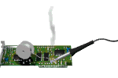

M6INV |
Welcome to the website of M6INV, a website I hope to kep updated with tutorials, experiments and projects all relating to electronics and physics. I expect there will be a notable bias towards radio based projects - this is because radio is cool! I hope you enjoy the website and learn something new. |
On the left are links which will take you to specific pages I have written. In the future, when I have written more pages, I will organise them into seperate categories, but until then it seems silly to do so. I am currently working on a solar flare detector, which works on an interesting change in refractivity of the Earth's ionosphere. Check out the Solar Flare Detector project for more information. A little bit about me. I've been interested in engineering for as long as I can remember, having fond memories of seeing the Search and Rescue Seakings based at Lossiemouth as a child. It wasn't until I started my GCSE's, however, that electronics became a real passion. I have been keen to do as much experiments in my own time as possible, and I've spent the last few years soaking up as much as I can. I'm an amateur radio operator, and as one can probably guess, radio is very important to me! Whilst I am most comfortable with hardware, I have been trying to expand my knowledge, and recently a considerable amount of experimenting with programming has happened. I now program mainly in assembly for embedded applications, but I am progressing towards slightly higher level languages to allow an easier transistion betwee architectures. The majority of my embedded projects are done using either Microchip or Texas Instrument microcontrollers, depending on the requirements of the design. Cost is quite a big factor too (which is often won by Ti!). I've been building on my knowledge of C, which has allowed me to expand my programming to computers, and most recently I've started readin on c++ and Java, which I believe will open some interesting doors into the internet. In the near future, I'd like to begin working with FPGA's, either with Verilog or VHDL. I guess whichever one is chosen will be probably down to price (the textbooks alone are enough to make my eyes water!), or which ever route my university wishes me to take. My first year university exams have just finished, I hope to go and study microwave circuit design at university as well as any form of antenna theory. The lure of the interactions and manipulations of electrical and magnetic fields just has a real 'coolness' about it. I'm currently studying Electronic Engineering at Coventry University, and I've been picking up some pretty good results in my first year. Let's hope that continues, and let's hope for some exciting projects over the holidays! |
|  |